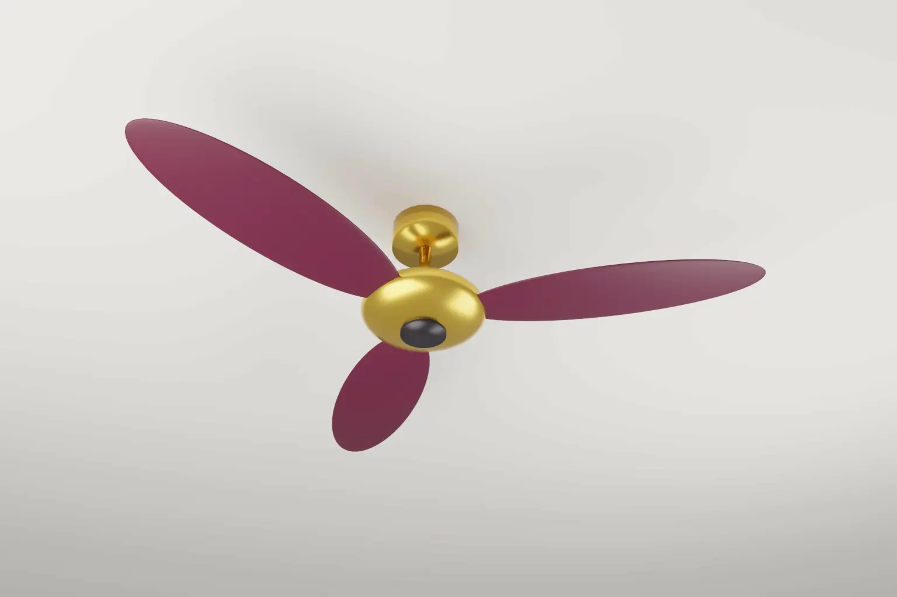

Design infringement in India is judged by the eye, not by a list of differences. On 16 October 2026 a Division Bench of the Bombay High Court applied that rule to restore an injunction for Atomberg against Stove Kraft.
The case is Atomberg Technologies Pvt Ltd v Stove Kraft Ltd, Commercial Appeal (L) No. 14941 of 2026. Justice Bharati Dangre wrote the judgment for a bench with Justice Manjusha Deshpande. The court set aside a single judge's order of 17 April 2026 that had refused interim relief.
- Atomberg owns Design No. 325322-001 in Class 23-04 for a ceiling fan, registered on 1 January 2020.
- Atomberg sued over Stove Kraft's "Pigeon fan-tastic BLDC Ceiling fan" for design infringement and passing off.
- The court held that the single judge had wrongly dissected the designs into separate features.
- The novelty lay in the petal shaped, elongated blades tapering at the end and their attachment to the canopy.
- A Z shaped shaft did not help Stove Kraft, because Atomberg never claimed novelty in it.
- The court restored the injunction and the Court Receiver order, and found a case of passing off.
Background
Atomberg sells the Renesa Alpha ceiling fan. It sued Stove Kraft in Commercial (IP) Suit No. 710 of 2025. On 24 July 2025 the court granted an ex parte ad interim injunction and appointed a Court Receiver to seize the impugned fans.
On 17 April 2026 the single judge discharged the Receiver and dismissed the interim application. The judge compared photographs and tables of the two fans. Atomberg appealed.
What the Division Bench decided
The eye test, not a dissection
The court held that similarity is judged solely by the eye, on the overall appearance. The single judge had said she was applying that test. But she ended up dissecting the rival designs into separate integers. The court said that is not the test under the Designs Act, 2000.
The two designs need not be identical. The court looked at the substance and the essential features. Here the essential features were the petal shaped blades, their tapering ends and their attachment to the canopy. Judged by the eye, the two fans were strikingly similar.
Unclaimed features do not count
Stove Kraft relied on Atomberg's Z shaped shaft. It argued that this was the real novelty, and that Atomberg's other fans did not use it. The court rejected this. Atomberg never claimed novelty in the shaft and never sought to register it as part of the design. So it could not decide the comparison.
Two tests for two questions
The court drew a useful line between infringement and validity. For infringement, it applied the eye test of an ordinary purchaser. That purchaser carries an image of the product and may be misled by a strikingly similar one.
For novelty and originality, the court said the "instructed eye" test applies. This views the design through someone familiar with prior products and common trade variations. The court took this test from the Delhi High Court's decision in Diageo Brands BV v Alcobrew Distilleries India. It said the instructed eye applies when a defendant tries to cancel a registration for lack of novelty. Diageo itself had applied the instructed eye to piracy under section 22. So the Bombay and Delhi High Courts now frame the infringement test differently.
Originality in applying a shape
"Original" under section 2(g) includes designs that are old in themselves but new in their application. The court gave the example of petal shaped blades on a ceiling fan. Petal shapes exist elsewhere, but applying them to a fan can be original.
Passing off
The court also found passing off. Atomberg showed goodwill through sales figures and continuous use of the design. Actual confusion was not needed. It was enough that a purchaser was likely to mistake one fan for the other.
How the US, the EU and the UK compare
- United States. Design patents are infringed under the ordinary observer test from Egyptian Goddess v Swisa (Fed. Cir. en banc, 2008). The comparison is made in light of the prior art. In LKQ v GM Global Technology (2024), the en banc Federal Circuit made the test for obviousness of designs more flexible.
- European Union. An EU design covers any design that does not produce a different overall impression on the informed user. The informed user knows the existing designs in the sector. The reformed EU design rules under Regulation (EU) 2024/2822 keep this test.
- United Kingdom. The Registered Designs Act 1949 uses the same overall impression on the informed user for validity and infringement.
India's approach is close in result but different in language. Atomberg applies the ordinary purchaser's eye for infringement and the instructed eye for validity. In the EU and the UK, one informed user test does both jobs. Until the Supreme Court or a larger bench settles the point, the forum may matter in India.
Our note on GUI and icon design registration in India covers another recent design development.
Practical steps
- When filing a design, describe the features in which novelty is claimed with care. Unclaimed features may not help you later.
- Choose representations that show the overall appearance clearly from the key views.
- Keep sales and advertising records for the product. They support passing off claims alongside the design.
- If you are accused of infringement, collect prior art that shows the combination of features, not just single features.
- Act early. Ex parte relief with a Court Receiver remains available against clear imitations.
Our design and copyright services cover filing, enforcement and clearance in India and abroad.
Frequently asked questions
What is the eye test for design infringement in India?
The court compares the two articles by their overall visual appearance, as a purchaser would. It does not break them into small differences.
Does a feature I did not claim as novel protect against copying?
Not on its own. In Atomberg the court gave no weight to a Z shaped shaft that was never claimed as part of the registered design.
Can a design be original if the shape already exists?
Yes. Under section 2(g), a known shape applied to a new article can be original, such as petal shaped blades on a ceiling fan.